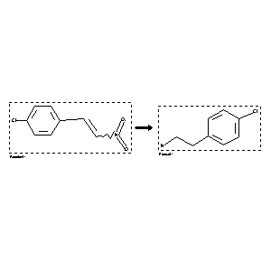

 |
| FA | RX(1); FLST(1); RX(2) |
Reaction (1 of 1)
| Reaction ID | 2104266 |
| Reactant BRN | 2208373 |
| Reactant | 1-chloro-4-(2-nitro-vinyl)-benzene |
| Product BRN | 508247 |
| Product | 4-chloro-phenethylamine |
| No. of Reaction Details | 2 |
Reaction Details (1 of 1)
| Reaction Classification | Preparation |
| Yield | 33 percent (BRN=508247) |
| Reagent | LiAlH4 |
| Solvent | tetrahydrofuran |
| Citation Pointer | 5672793; Journal; Hocquaux, Michel; Marcot, Bernard; Redeuilh, Gerard; Viel, Claude; Brunaud, Marcel; et al.; EJMCA5; Eur.J.Med.Chem.Chim.Ther.; FR; 18; 4; 1983; 319-329; |
Reaction Details (2 of 1)
| Reaction Classification | Preparation |
| Reagent | LiAlH4 |
| Reaction Type | Reduction |
| Citation Pointer | 6175356; Journal; Silveira, Claudio C.; Bernardi, Carmem R.; Braga, Antonio L.; Kaufman, Teodoro S.; TELEAY; Tetrahedron Lett.; EN; 40; 27; 1999; 4969 - 4972; |
Reference (1 of 2)
| Citation Number | 5672793 |
| Document Type | Journal |
| Authors | Hocquaux, Michel; Marcot, Bernard; Redeuilh, Gerard; Viel, Claude; Brunaud, Marcel; et al. |
| CODEN | EJMCA5 |
| Journal Title | Eur.J.Med.Chem.Chim.Ther. |
| Language Code | FR |
| (Series) Volume | 18 |
| Number | 4 |
| Publication Year | 1983 |
| Page | 319-329 |
Reference (2 of 2)
| Citation Number | 6175356 |
| Document Type | Journal |
| Authors | Silveira, Claudio C.; Bernardi, Carmem R.; Braga, Antonio L.; Kaufman, Teodoro S. |
| CODEN | TELEAY |
| Journal Title | Tetrahedron Lett. |
| Language Code | EN |
| (Series) Volume | 40 |
| Number | 27 |
| Publication Year | 1999 |
| Page | 4969 - 4972 |